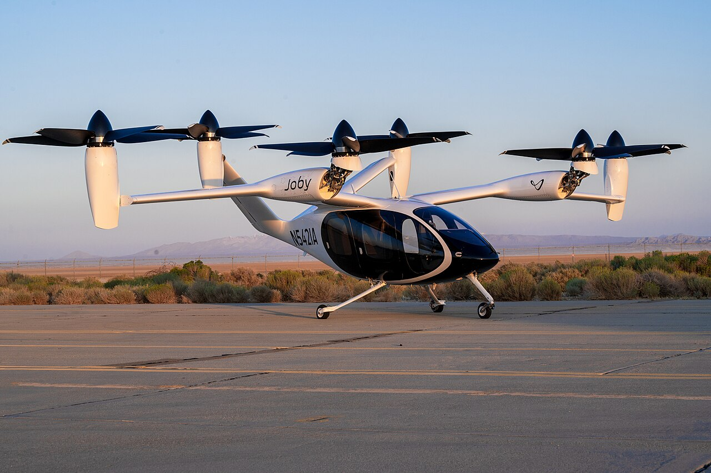
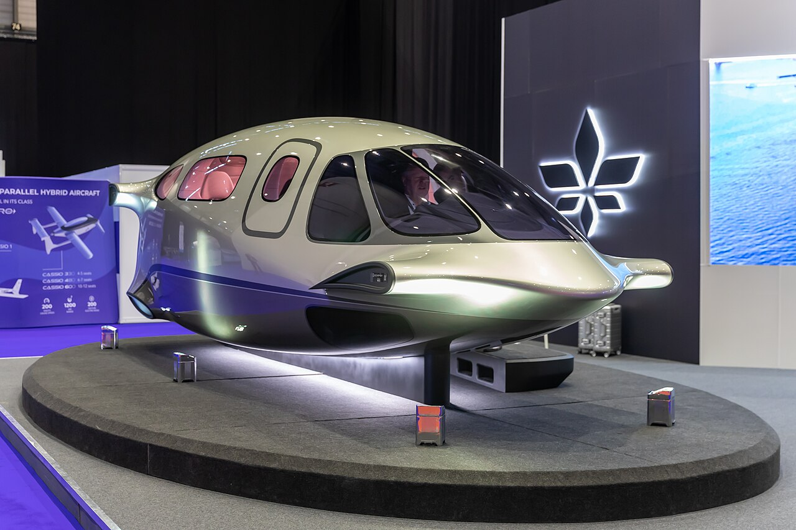
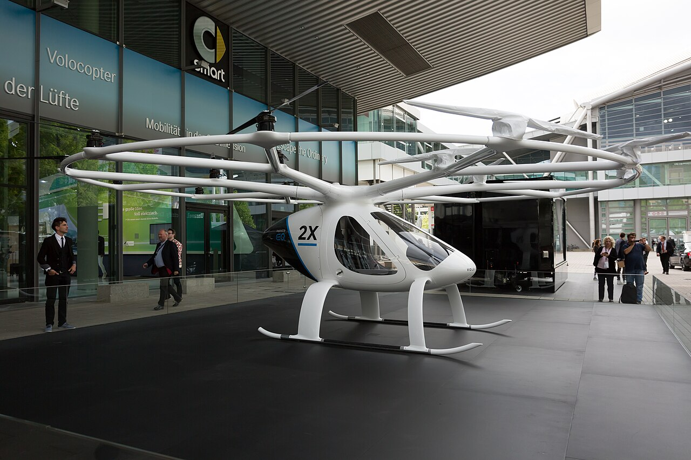
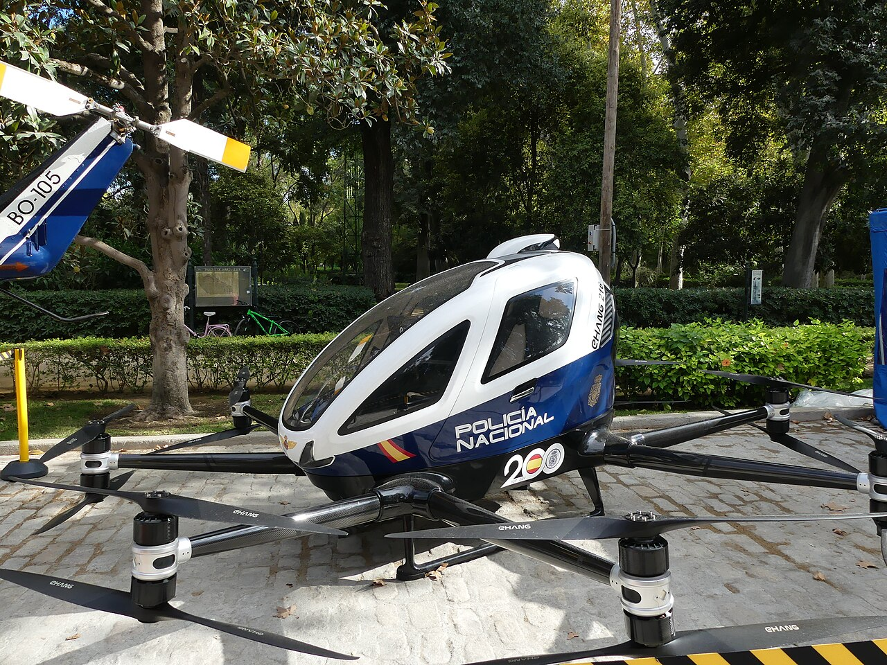
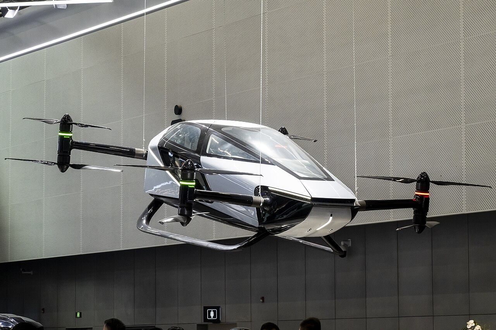

「空中計程車」,到底是什麼?
業界所說的空中計程車,指的是eVTOL(electric Vertical Take-Off and Landing,電動垂直起降航空器)。它的賣點很直接:像直升機一樣垂直起降,不需要長跑道,但用多組電動旋翼取代傳統引擎,理論上更安靜、更便宜、維護成本更低,適合在城市裡做短程、點對點的接駁。
Joby Aviation
目前全球進度最靠前的業者之一。2021年向美國證管會申報的上市文件中,曾揭露量產規模下單機成本估計落在百萬美元級距(約新台幣數千萬元)區間1——這是製造成本,不是乘客票價,早期估算也隨後續量產規劃多次調整,不能直接換算成「搭一次要多少錢」。
也就是說:即便是進度最快的業者,2026年仍是「準備載客」而非「已經載客」的階段。技術可行,商業化的時間表卻一直在往後滑。
世界進度表:誰先飛,誰還在等牌照
把目光放到全球,會發現「進度不一」這四個字背後,差距其實不小。
目前沒有政府正式發布的空中計程車或低空經濟政策文件。最具體的進展,是日商SkyDrive與台灣無人機公司7A Drones、工研院三方合作,規劃2028年在澎湖啟動緊急醫療運輸,首條航線擬連接馬公市與虎井嶼12。
把這張表放在一起看,會發現一件事:截至2026年,沒有一個地方的eVTOL已經「正常載客運營」。進度最快的美國、中國大陸業者都還卡在認證或監管收緊的關卡上——這是一個仍在高速變動、尚未定型的產業。
各家業者,飛到哪了?
把鏡頭拉近一點,看看撐起上面那張時間表的,究竟是哪些公司——以及它們各自卡在哪一關。這個產業燒錢速度極快,兩家歐洲先驅甚至已經在這一兩年內倒下。

Joby Aviation
認證收尾FAA五階段機型認證中,第四階段完成度約75%,目標2026年內載客,2025年已累積600+次試飛,但Q2虧損2.45億美元23。
Archer Aviation
法規突破2026年5月,其Midnight機型獲阿聯酋民航總局(GCAA)納入「限制型別適航證」(RTC)認證路徑,是全球首家eVTOL業者取得此進展;在美國也已完成FAA全部合規文件,同樣以2026年載客為目標13。
Wisk Aero
探索合作主打「無人駕駛」空中計程車,已公開第六代機型Gen 6,並與日本航空(JAL)簽署合作備忘錄,探索自駕空中計程車在日本的應用——但JAL尚未承諾採購機型14。
Vertical Aerospace
試飛階段VX4機型已完成首階段有人試飛(20次),蒐集性能資料14;並與日本丸紅合作,規劃在大阪灣進行有人eVTOL示範飛行,目標年份為2026年8。公開資訊有限,最新認證進度尚待官方公告確認。

Lilium
聲請破產歐洲最早的eVTOL先驅之一,2024年10月首次聲請破產,募資案一度出現逾2億歐元的拯救方案,但2025年2月21日二度聲請破產,裁員逾千人,營運停止15。

Volocopter
聲請破產同為德國eVTOL代表業者,2024年12月26日向卡爾斯魯厄地方法院聲請破產,進入臨時破產管理程序,管理人持續尋找新投資人,後續結果尚待追蹤16。

億航 EHang
取證後延宕EH216-S已取得營運合格證,但2026年Q2一起有人輕航機事故使監管轉趨保守,合肥載客商轉延後,公司已撤回全年營收指引,轉而加速布局泰國市場10。

小鵬匯天 XPeng AeroHT
籌備量產分體式飛行汽車「陸地航母」:雙人eVTOL飛行器搭配六輪地面載具充電收納,目標2026年下半年開始交付,已獲超過5,000筆訂單,廣州新廠已動工,曾取得CAAC南部管理局適航認證17。
把這張名單放在一起看,會發現這個產業有兩個同時存在的事實:一邊是Archer拿到全球首張「限制型別適航證」路徑、中國業者衝刺量產交付;另一邊是兩家德國先驅在一年內先後倒下。技術方向確定,但商業模式與資金链能不能撐到載客運營那一天,仍是最大的未知數。
天上比地上,快多少?
用一個假設情境感受這個產業想解決的問題:郊區機場到市中心商務區,直線距離28公里。若空中計程車以平均時速180公里飛行,約9分鐘可達;相對地,若改採地面接駁,最後8.8公里的尖峰車程約需26分鐘。這只是用來說明概念的示意數字,拉動下面的滑桿,套用不同的距離與速度,看看差距會怎麼變化——但別忘了,這組數字沒有把起降排隊、轉乘、航管調度與天候因素算進去。
(不含起降與轉乘)
接續車程
試算方式:飛行時間 = 直線距離 ÷ 空中計程車時速;地面時間 = 地面接續路程 ÷ 尖峰時段均速。兩者都只計算「移動中」的時間,實際還要加上候機、起降排隊、安檢與轉乘等候等環節——這些隱藏成本,才是eVTOL能否真正比開車快的關鍵。
一套低空接駁網絡,需要什麼?
不只是飛機,eVTOL要真正普及,背後需要一整套地面基礎建設與空域規劃。國際上常被提到的幾類場景:
- 商商業 / 科技園區企業總部與產業聚落聚集的區域,是短程商務通勤需求最具體的場景。
- 轉交通轉運節點鄰近車站、機場的轉乘樞紐,可以讓空中與地面運輸系統彼此銜接。
- 管政府與高安全管制區域許多城市的政府機關、軍事設施周邊,本就是禁航或限航區域,這類場域若要納入低空規劃,必須先處理既有的空域管制規則。
- 醫醫療院所呼應低空經濟裡「緊急醫療後送」的應用場景,而非單純的商務接駁。
擋在路上的,是三道牆
這套構想要落地,還有幾個繞不開的問題。
國家安全
許多城市的政府機關、軍事設施周邊,本就是高敏感度的禁航或限航區域,低空載人載具的規劃,必須先取得相關單位的同意與配套。
既有空域管制
部分區域空域本就疊加大量既有管制(軍事、機場、禁限航區),如何在這些既有限制中挪出一條新的低空航路,是許多城市共同面對的難題。
飛航安全與噪音
即使eVTOL比直升機安靜,大量低空載具進出市區,仍會牽動一般居民的接受度,以及既有航空法規對「可承受風險」的定義。
台灣,目前走到哪一步?
相較於前面提到的各國進度,台灣目前唯一具體落地的計畫,其實不在都會區,而是在澎湖。日商SkyDrive與台灣無人機公司7A Drones、工研院三方結盟,正把一項eVTOL緊急醫療運輸計畫,從可行性研究推進到籌備階段12。
換句話說:台灣目前真正往前推進的案例,場景是「離島醫療」,不是「城市通勤」——這也與多數國家的eVTOL發展路徑相似:從低密度、高急迫性的場景切入,再逐步擴大到都會區的日常運輸。
從示範飛行,到日常交通,還差多遠?
技術方向大致底定:多旋翼、電動、垂直起降,幾乎是所有業者的共同選擇。但真正決定這個產業能不能成為日常交通工具的,其實是三件事——認證速度(能不能拿到型別適航證)、基礎建設(起降場、充電、空域管理有沒有到位),以及最現實的成本(票價能不能真的貼近計程車,而不是停留在「包機」等級)。
目前看來,2026到2028年會是一個關鍵的分水嶺:美國、日本、阿聯酋都把這段期間設定為從「試飛」走向「初期商轉」的窗口;中國大陸的案例則顯示,就算拿到合格證,監管態度也可能隨著任何一起意外事故而迅速轉向保守。空中計程車會不會在這個十年內真正走進日常生活,答案可能不在技術本身,而在於這些認證與法規的賽跑,誰先跑到終點。
本頁為依據公開報導整理的獨立研究筆記,資訊時效至2026年10月。技術與法規進度變動快速,請以各業者與主管機關最新公告為準。
參考來源
- Joby Aviation Inc., Form S-1 (2021), U.S. SEC EDGAR;另見二手分析 Risk Premium Research,〈Joby Valuation〉。sec.gov / riskpremiumresearch.substack.com
- Kavout Market Lens,〈Joby Aviation's Sky-High Ambition: Can Certification and Scale Justify a 10x Leap?〉。kavout.com
- Transport Topics,〈Joby Targets 2026 US Air Taxi Launch〉。ttnews.com
- Nasdaq,〈Is JOBY Worth Buying as Commercial Progress Meets Execution Risk?〉。nasdaq.com
- FlyingMag,〈FAA Releases Its Innovate28 Plan for AAM Integration by 2028〉。flyingmag.com
- 國土交通省/經濟產業省,第12回「空の移動革命に向けた官民協議会」ロードマップ改訂(2026/3/27);Travel Voice報導。mlit.go.jp / travelvoice.jp
- Aviation Wire,〈JAL・住友商事のSoracle、大阪府市と連携協定〉,2025/09/11。aviationwire.jp
- Newswitch,〈大阪湾エリアでの有人eVTOL実証飛行計画〉。newswitch.jp
- Travel Voice,〈Four 'Flying Car' operators in Osaka Expo are selected as a step to commercialization in Japan〉。travelvoice.jp;中文報導見inside.com.tw
- Helihub,〈EHang reports 2026 Q1 Unaudited Financial Results〉;MarketBeat,〈Transcript: EHang Q2 2026 Earnings Call Highlights〉。helihub.com / marketbeat.com
- 鉅亨網,〈5分鐘飛20公里成本60元,上海「空中計程車」要來了〉。hao.cnyes.com
- Air Med & Rescue,〈SkyDrive advances plans for eVTOL medical transport network in Taiwan〉。airmedandrescue.com
- Gulf News,〈Archer begins test flights in Abu Dhabi for air taxi rollout, targeting UAE commercial launch〉;Arabian Business,〈UAE to begin air taxi flights as early as 2026〉。gulfnews.com / arabianbusiness.com
- eplaneAI,〈Five Air Taxis Poised to Shape Urban Mobility by 2026〉。eplaneai.com
- ch-aviation,〈Germany's Lilium files for final insolvency〉。ch-aviation.com
- Silicon Canals,〈Volocopter files for insolvency〉。siliconcanals.com
- SCMP,〈AeroHT gears up for European flying car debut as Xpeng affiliate clocks 5,000 orders〉;CnEVPost,〈Xpeng Aeroht aims to start delivering modular flying car in 2026〉。scmp.com / cnevpost.com
- CTV News,〈Tesla unveils what it says is a flying car〉,2026/10。ctvnews.ca